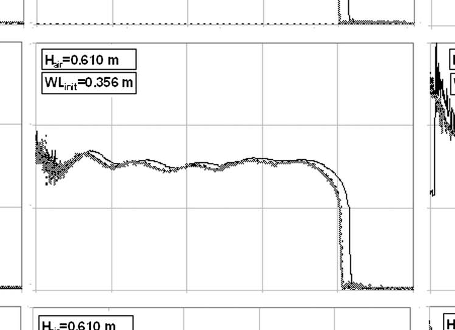
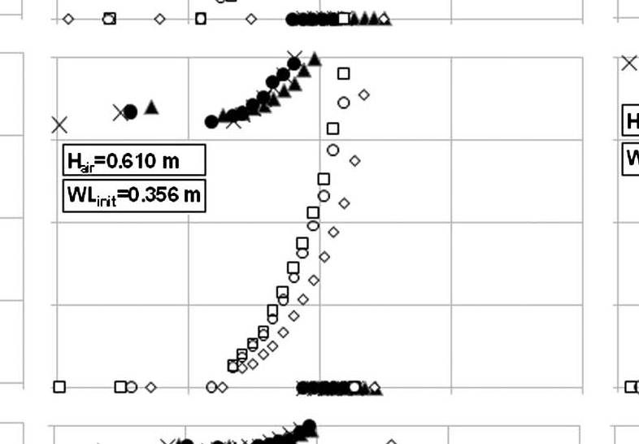
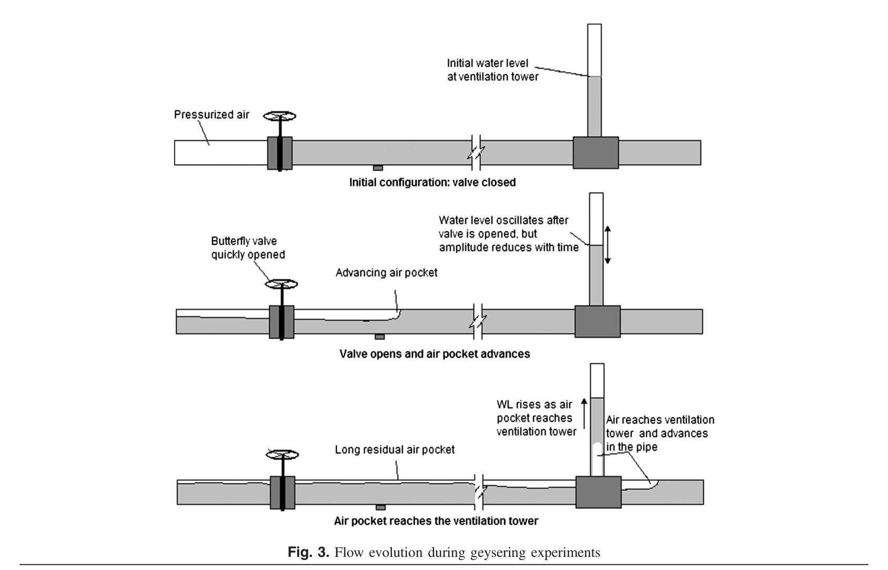
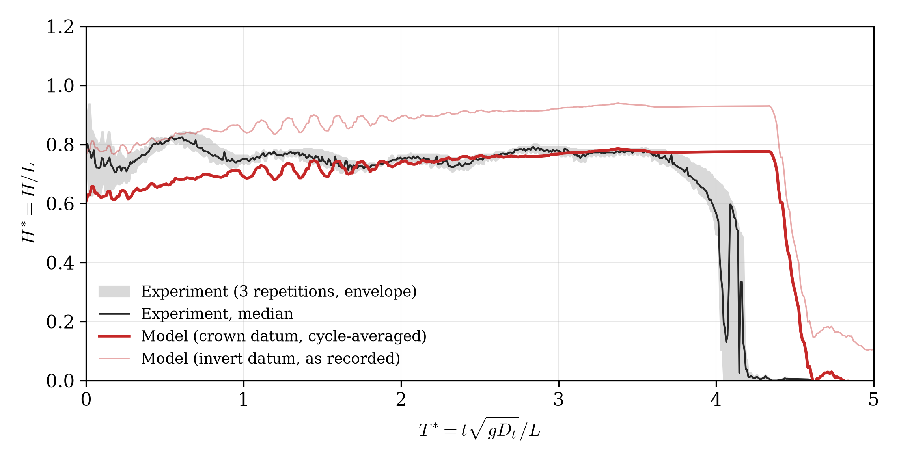
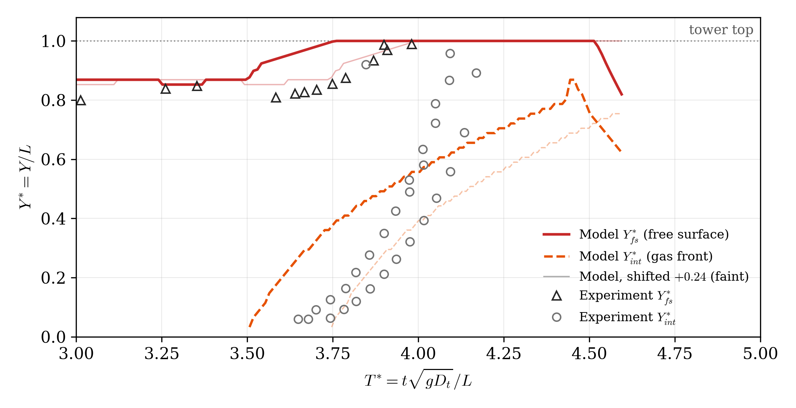
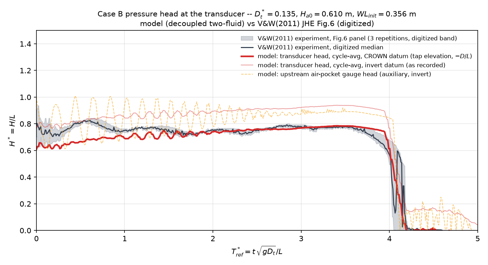
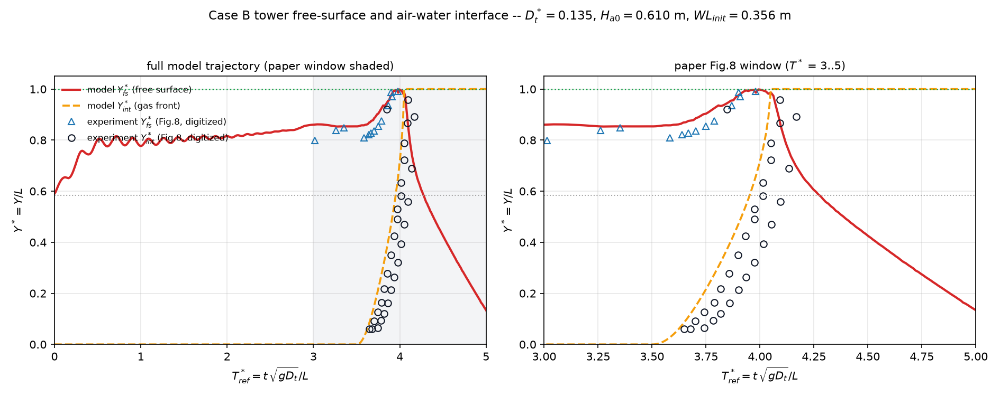

Case B — V&W(2011) 小塔工况（喷发分支）
工况：Dt=12.7 mm（Dt/D=0.135）、Ha0=0.610 m、WL=0.356 m。
无量纲化：T*=t·√(gDt)/L，H*=H/L，Y*=Y/L（L=0.610 m；本工况 T*=1 对应 1.73 s）。
论文中与 Case B 相关的图
| 论文图 | 内容 | 与本工况的关系 | 本报告中的对照 |
|---|---|---|---|
| Fig.6（p6） | 压头 H*(T*)，Dt*=0.135 的 3×3 面板阵 | 正是本工况：中心面板 = Ha0=0.610、WL=0.356，3 次重复 | 数字化后与模型叠加（下方"压头"图） |
| Fig.8（p8） | 水面 Y*fs / 界面 Y*int，Dt*=0.135 的 3×3 面板阵，窗口 T*=3–5 | 正是本工况：中心面板，3 次重复 | 数字化后与模型叠加（下方"水位/界面"图） |
| Table 2（p8） | 各塔径的无量纲爬升速度平均值 | Dt*=0.135 行：V*int=1.43、V*fs=0.44 | 对照表"爬升速度"两行 |
| Fig.3（p3） | 喷发实验流动演化示意（阀开→气囊推进→抵塔） | 通用机理图；中间小图注明"开阀后塔水位振荡、幅值随时间衰减"——与模型的释放振荡同源 | 下方原图收录 |
| Fig.11（p11） | 论文自家 TPA 模型 vs 实验的五联图，Dt*=0.135 | 同塔径但不同初值（Ha0=0.305、WL=0.254）；我们用同一冻结求解器改初值复跑对照 | "Fig.11 对照"栏（红线直接叠画原图） |
| Fig.1/2/9 | 现场喷发照片 / 实验装置图 / 模型变量示意 | 通用背景，与具体工况无关 | — |
| Fig.4/5/7/10 | 气囊爬升照片、压头、水位、模型对照 | 均为大塔 Dt*=0.607（= caseA 的对标图） | 见 caseA 报告 |
| Fig.12 | 模型预测的水面抬升-初始水位参数图（全部塔径） | 参数化汇总，非时间序列 | — |
论文原图（扫描面板）
Fig.6 本工况面板（压头）

Fig.8 本工况面板（水面/界面）

Fig.3 流动演化示意（论文机理图）

注意中间小图的标注："Water level oscillates after valve is opened, but amplitude reduces with time"——实验本身就有开阀释放振荡（论文正文第 4 条亦有描述），模型解析出的 水柱-气囊弹簧振荡与之同源，差异只在衰减速率。
出版级重绘图（论文实际收录版本）
以下为论文（E:\Geysering\paper）收录的自绘矢量图的 PNG 预览， 由 caseB_plot_pub.py 生成；数据与下方叠加对比图同源（同一冻结求解器输出 + 同一数字化 CSV）。
压头 H*：三次重复数字化包络+中位（灰/黑）+ 模型管顶基准 0.4 s 周期平均（红粗）+ 管底基准原始记录（红浅）

水位/界面 Y*（发表窗口 T*=3–5）：实验散点（三角=水面，圆=界面）+ 模型曲线+ 刚体平移 +0.54 的浅色对照线（模型画至实验覆盖终点）

叠加对比（工作版全量图）
压头 H*(T*)

塔内水面与气水界面 Y*(T*)

事件时刻与量值对照
| 指标 | 论文实验（数字化） | 模型 | 备注 |
|---|---|---|---|
| 是否喷发（水面到塔顶） | 是（每次重复都喷发） | 是（水面最高 1.00L） | |
| 塔水位平台（气体进塔前） | 0.82 | 0.83 | 静水位=气囊准静态平衡 |
| 压头平台 H*（1<T*<4 中位） | 0.76 | 0.75（管顶基准）/ 0.91（管底） | 论文读数与管顶基准一致 |
| 气水界面进入塔（Y*int 离底） | T*=3.65（6.3 s） | T*=3.62（6.3 s） | 模型偏早 ~0.6 T* |
| 气水界面到达塔顶 | T*=4.09（7.1 s） | T*=4.04（7.0 s） | |
| 自由水面到顶（喷发） | T*=3.90（6.7 s） | T*=3.91（6.8 s） | |
| 压头骤降（气囊排空） | T*=4.05（7.0 s） | T*=4.10（7.1 s） | 气体贯通塔顶触发 |
| 界面爬升速度 V*int（√(gDt) 归一） | 1.43（Table 2 平均） | 1.84 | 取 Y*int 0.1–0.8 段斜率 |
| 水面爬升速度 V*fs（√(gDt) 归一） | 0.44（Table 2 平均） | 0.43 | 取喷发前最后爬升段斜率 |
基准面说明：论文未报告压力孔的周向高程。图中同时保留一维模型原始值及
历史 -D/L=0.154 假设；后者改善吻合不能反证测点基准，详见三维算例 PAPER_AUDIT.md。
吻合点：喷发分支（水面到顶）、气体进塔前塔水位平台（模型 ~0.85 vs 实验 ~0.82，
即气囊准静态平衡位）、压头平台（管顶基准 ~0.78 vs 实验 0.76）、界面爬升-水面爬升-压头骤降的
相对时序（进塔→喷发→贯通→骤降）。
差异点：整段气体时序偏早 ~0.5–0.6 T*（水平管 crown current 抵塔偏早，与 caseA 同向）；
释放振荡衰减偏慢（水柱-气囊弹簧模态，实验 ~1 T* 内衰减）；喷发后模型塔柱随排气回落（实验窗口内
无 fs 数据可对比）。数字化中间产物见 digitized/；模型无量纲序列见
outputs/caseB_model_series.csv。
两流体模拟逐帧查看器 — 水平管 + 通风塔全场演化
同一冻结求解器的 Case B 全场演化（水=蓝，气=白/浅灰）： 阀开释放振荡 → 塔水位抬升到准静态平衡（~0.5L） → 气囊沿管顶推进 → 抵塔、驱动气核爬升（水面被顶托到塔顶=喷发） → 贯通排气 → 压头塌落、塔柱回落。 左图为真实比例 1:1（管径 D=94 mm、塔径 Dt=12.7 mm 均按真实尺寸）， 本工况的塔在全局图上只是一根发丝——塔内细节请看右侧放大同步视图 （按当地两流体气含率 α_g 画气核宽度）。左右方向键 / 滑块 / 播放均可调帧。
时间跨度说明：t=0 为开阀时刻，模拟到 9 s 结束——本工况 1 T* = 1.73 s，论文曲线窗口 T*=5 对应 8.6 s，9 s 已完整覆盖（平衡段→气囊抵塔→ 气核爬升/喷发→贯通排气→压头归零→塔柱回落）。
全局 1:1 视图
水平管按截面含水率显示分层气团推进。
竖管放大同步视图
气核宽度 = 当地 α_g（无阈值化）； 蓝线=可见水面（含气核顶托），红虚线=气相前沿。
整段 GIF 备份：caseB_animation.gif
{kind=link}